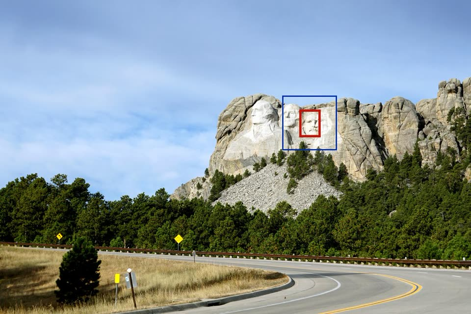
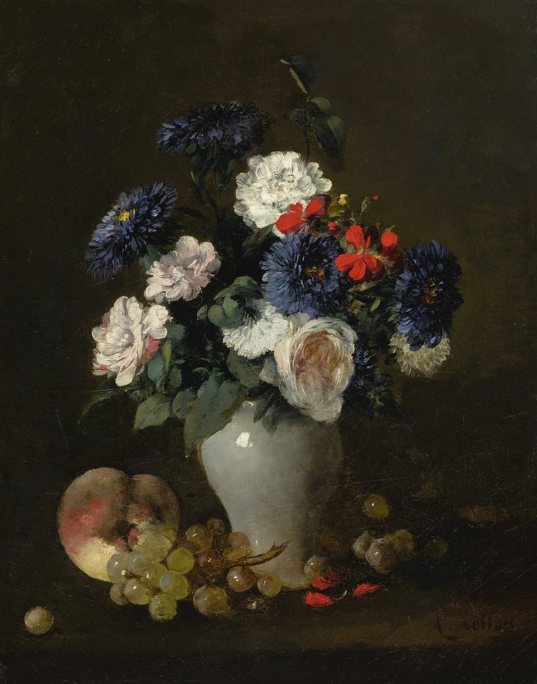
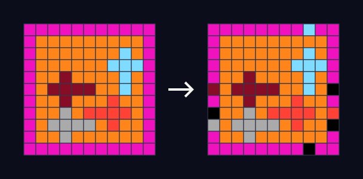

Perception
Seeing and understanding: recognising objects, reading fine detail and making sense of whole scenes in images and video.
Community research initiative · 2026
Benchmarking Recursive Self‑Improvement of Frontier Agents
Study how agents improve across rounds with a flexible, budget-aware benchmark designed to be practical to run and easy to extend.
At a glance
Robots, panoramas, puzzles, edits and 3D scenes, each shown by the self-improved solution. Pick one to see it next to where it started.
All demos →
Perception · Visual SearchFind small details in large photos Action · RoboDojoInsert the tubes
Creation · Image EditingSwap in sunflowers Action · RoboLabCube and banana into the bowl
Reasoning · ARC-AGI-2Infer the rule from examples Action · RoboCasaOpen the cabinet Reconstruction · 3D TrackingKeep each identity across views Perception · Video QualityScore real user videos Action · RoboDojoThrow the bottles into the dustbin Reasoning · ARC-AGI-3Clear levels with no instructionsOverview
Flex-RSI measures how well today's frontier agent systems improve on their own: given a downstream task, the agent iteratively refines its own harness, from its solution to its tools and prompts, to raise its score within a fixed budget. Tasks span visual perception and reasoning, robot control, 3D reconstruction and more.
We are actively expanding Flex-RSI with more tasks, tracks and models.
Begin from a documented task setup and starter solution, then let the agent improve its own approach.
Set limits for time, tokens, API spend or GPU hours, and report the budget with each run.
Use validation to guide iteration and reserve test data for the final score.
Record edits, experiments, model calls and outcomes so each run can be understood and repeated.
Tracks
The current tasks span five areas, perception, reasoning, action, reconstruction and creation: from visual search and memory over video to robot control, 3D scene reconstruction and image and video generation. Flex-RSI is designed to grow as contributors bring new tasks and domains.
Seeing and understanding: recognising objects, reading fine detail and making sense of whole scenes in images and video.
Drawing conclusions over several steps: spatial, temporal and logical reasoning about what is observed and what is known.
Acting in physical and simulated worlds: planning, controlling robots and moving to gather the information a task needs.
Recovering the structure of the world: 3D and 4D geometry, correspondence and motion from images and video.
Making and editing content: images, scenes and other media produced to precise instructions.
More domains as the benchmark grows.
Citation
@misc{flexrsi2026,
title = {Flex-RSI: Benchmarking Recursive Self-Improvement
of Frontier Agents},
author = {To be announced},
year = {2026},
note = {Project page: https://flex-rsi.github.io}
}